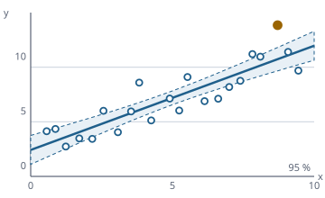

Statistik wie in R, als Rechenkern in Java
Funktionsübersicht für die Präsentation des envisionz-Frameworks, Stand 28.09.2026. Spezielle Funktionen und Verteilungen, beschreibende Statistik und Ausreißer, Konfidenzintervalle, Testfamilien, Korrelation und Regression, Varianzanalyse, multivariate Verfahren, Zeitreihen, statistische Prozesslenkung, Resampling und Datenvorbereitung, dazu ein Methodenkatalog als Schnittstelle für die Oberfläche. Je Verfahren: Zweck, Methoden, Einsatz im Framework, Anwendungen, Beispiele. Die Beispiele sind gekürzt.

Regression.simple und StudentT gerechnet: Gerade und 95-%-Band; hervorgehoben ist der Punkt mit dem größten Cook-Abstand.Grundsätze des Moduls
Normal.cdf(-9) = 0 (weil erfc als 1 − erf gerechnet wurde) ist behoben und festgehalten.Rng mit ausdrücklicher Saat, gleiche Saat gibt eine bitgleiche Folge. Rechenkerne sind zustandslos, Rng nicht: eine Instanz je Lauf.Locale.ROOT formatiert.Grundlagen und Verteilungen envisionz.stats.core · envisionz.stats.dist · envisionz.stats.result
SpecialFunctions und Rng
Gamma (Lanczos mit Spiegelung), Digamma, Beta, regularisierte unvollständige Gamma- und Betafunktion (Reihe bzw. Lentz-Kettenbruch), erf und erfc. erfc rechnet über die obere unvollständige Gammafunktion und bleibt dadurch im Rand genau. Aus diesen Funktionen kommen alle Verteilungsfunktionen und p-Werte. Spezielle Funktionen – Hintergrund, Formeln und Pseudocode → Verteilungen und Quantile – Hintergrund, Formeln und Pseudocode →
Methoden
logGamma,gamma,digamma,logBeta,beta,regularizedGammaP/Q(a, x),regularizedBeta(x, a, b),erf,erfcnew Rng(seed),uniform,normal,exponential,nextInt,bootstrapIndices(n),permutation(n),shuffle,sampleWithout(n, k),sampleByInversion(q)
Eingesetzt in
Wofür
Die Zahlengrundlage jeder Wahrscheinlichkeit; wiederholbare Simulation und Resampling.
Distribution – 14 Verteilungen
Normal, Student-t, Chi², F, Gamma, Beta, Exponential, Gleichverteilung, Lognormal, Weibull, Binomial, Poisson, hypergeometrisch, negativ binomial. Normalquantil nach Acklam mit Halley-Schritt; diskrete Quantile über Klammersuche.
Methoden
pdf(x),cdf(x),quantile(p),mean(),variance(),sd(),sample(rng)new Normal(mu, sigma),Normal.standard(),new StudentT(df),new Weibull(shape, scale), …Results:HTestResult,ConfInt,EffectSize,AssumptionCheck,FitResult
Eingesetzt in
Wofür
Lebensdauer (Weibull), Ausfallzahlen (Poisson), kritische Werte, Wahrscheinlichkeiten im äußersten Rand.
Beispiel – Weibull-Lebensdauer und t-Quantil
double b10 = new Weibull(2.1, 12000).quantile(0.10); // 10-%-Ausfallzeit, Parameter beispielhaft
double t975 = new StudentT(9).quantile(0.975);Beschreiben, erkunden, Ausreißer envisionz.stats.descriptive · .eda · .outlier
Descriptive und Eda
Mittelwerte (arithmetisch, getrimmt, geometrisch, harmonisch), Streuung, Quantile nach allen neun R-Typen (Hyndman-Fan, Vorgabe 7), MAD, Schiefe, Wölbung, Fünf-Punkte-Zusammenfassung. Histogrammregeln nach Sturges, Scott und Freedman-Diaconis, Kerndichte mit Silverman-Bandbreite, empirische Verteilungsfunktion, Boxplot-Kennzahlen, Q-Q-Punkte. Kennzahlen und Quantile – Hintergrund, Formeln und Pseudocode → Ausreißer – Hintergrund, Formeln und Pseudocode →
Methoden
mean,trimmedMean,median,mode,variance,sd,cv,sem,quantile(x, p[, type]),iqr,mad,skewness,kurtosis,fivenum,summary,frequencyTableEda.nclassSturges,binWidthScott,binWidthFD,breaks,histogram,kde(x, nGrid),ecdf,boxplotStats,qqNormal,qqPoints
Eingesetzt in
Wofür
Messreihen vom Prüfstand zusammenfassen; Verteilung einer Größe ansehen, bevor ein Test gewählt wird.
Beispiel – Zusammenfassung und Quantil vom Typ 6
Descriptive.Summary s = Descriptive.summary(x); // n, mean, sd, min, q1, median, q3, max
double p95 = Descriptive.quantile(x, 0.95, 6);Outlier – Ausreißer erkennen statt löschen
Tukey-Zäune, z-Werte und robuste z-Werte (Median und MAD), Grubbs-Test, Dixon-Q, Rosner-ESD für mehrere Ausreißer, Hampel-Filter für Reihen, Winsorisieren und Stutzen.
Methoden
tukeyOutliers(x),zScores(x),robustZScores(x)grubbs(x)→HTestResult,dixonQ(x)→DixonResult,rosnerESD(x, max)hampelFilter(x, halbesFenster, nSigma),winsorize(x, anteil),trim(x, anteil)
Eingesetzt in
Wofür
Auffällige Messpunkte markieren; Ausreißer im Spaltentrend digitalisierter Tabellen finden.
Konfidenz-, Prognose- und Toleranzintervalle envisionz.stats.estimate
Estimate
Intervalle für Mittelwert (t), Varianz und Standardabweichung (Chi²), Median und Quantile (Ordnungsstatistik), Anteile nach Wald, Wilson, Clopper-Pearson und Agresti-Coull, Prognose- und Toleranzintervall der Normalverteilung, Bootstrap-Intervall als Perzentil oder BCa mit Jackknife-Beschleunigung. Hintergrund, Formeln und Pseudocode →
Methoden
meanCI(x, level),varianceCI,sdCI,medianCI,quantileCI(x, p, level)proportionCI(k, n, level, PropMethod.WILSON)predictionIntervalNormal(x, level),toleranceIntervalNormal(x, coverage, confidence)bootstrapCI(x, stat, level, B, rng, bca)→ConfInt(lower, upper, level)
Eingesetzt in
Wofür
Wie genau ein gemessener Wirkungsgrad ist; welcher Bereich 99 % der Teile mit 95 % Sicherheit abdeckt.
Beispiel – BCa-Bootstrap für den Median
ConfInt ki = Estimate.bootstrapCI(x, Descriptive::median, 0.95, 2000, new Rng(1L), true);Testfamilien envisionz.stats.test · envisionz.stats.categorical
ParametricTests und NonparametricTests
t-Tests für eine, zwei (Welch als Vorgabe) und gepaarte Stichproben, z-Test, F-Test, Bartlett, Levene und Brown-Forsythe, Anteilstests. Rangverfahren: Mann-Whitney-U, Wilcoxon-Vorzeichen-Rang, Vorzeichentest, Kruskal-Wallis, Friedman, Mood-Median, Runs-Test, jeweils mit Bindungskorrektur in der Normalnäherung. Gegenhypothese als "two.sided", "less" oder "greater". Parametrische Tests – Hintergrund, Formeln und Pseudocode → Rangtests – Hintergrund, Formeln und Pseudocode → Anpassungstests – Hintergrund, Formeln und Pseudocode → Kontingenztafeln – Hintergrund, Formeln und Pseudocode →
Methoden
oneSampleT(x, mu0, alt),twoSampleT(x, y, alt, welch),pairedT(x, y, alt),zTest,fTestVariance,bartlett(groups),leveneTest(groups, median),oneProportionZ,twoProportionZmannWhitneyU(x, y, alt),wilcoxonSignedRank(x, mu, alt),signTest,kruskalWallis(groups),friedman(data),moodMedian,runsTest,ranks
Eingesetzt in
Wofür
Ob sich zwei Bauteilvarianten oder zwei Prüfstände wirklich unterscheiden.
Beispiel – Welch-Test mit Effektstärke
HTestResult r = ParametricTests.twoSampleT(alt, neu, "two.sided", true);
double p = r.pValue(); // r.confInt(), r.effectSize(), r.assumptions(), r.interpretation()GofTests und CategoricalTests
Anpassungstests: Shapiro-Wilk (Royston), Kolmogorow-Smirnow für eine und zwei Stichproben, Anderson-Darling, Lilliefors, Jarque-Bera, Chi²-Anpassung, Cramér-von-Mises. Kontingenztafeln: Chi²-Unabhängigkeit mit Yates-Korrektur, Fisher exakt, McNemar, Cochran-Q, Cramérs V, Phi, Odds Ratio, Cohens Kappa.
Methoden
shapiroWilk(x),ksOneSample(x, dist),ksTwoSample(a, b),andersonDarlingNormal,lilliefors,jarqueBera,chiSquareGof(obs, exp, ddof),cramerVonMisesNormalchiSquareIndependence(table, yates),fisherExact(t),mcnemar(t, correction),cochranQ,cramersV,phi,oddsRatio,cohensKappa
Eingesetzt in
Wofür
Prüfen, ob Normalverteilung angenommen werden darf; Befund-Tafeln (gut/schlecht je Lieferant) auswerten.
Korrelation und Regression envisionz.stats.correlation · envisionz.stats.regression
Correlation
Pearson mit Test und Fisher-z-Intervall, Spearman, Kendall-τ, partielle Korrelation über die Präzisionsmatrix, Korrelationsmatrix, Autokorrelation und partielle Autokorrelation (Durbin-Levinson). Korrelation – Hintergrund, Formeln und Pseudocode → Regression – Hintergrund, Formeln und Pseudocode →
Methoden
pearson,pearsonTest,spearman,spearmanTest,kendallTau,kendallTestcorrelationMatrix(columns),partialMatrix(columns),acf(x, maxLag),pacf(x, maxLag)
Eingesetzt in
Wofür
Zusammenhänge zwischen Messkanälen; Autokorrelation in Zeitreihen erkennen.
Regression, LinearModel, Glm
Kleinste Quadrate mit voller Diagnose (Standardfehler, t, p, R², korrigiertes R², AIC, BIC, F, Hebelwerte, Cook-Distanz). Polynom, VIF, Ridge, Lasso (Koordinatenabstieg), robust nach Huber und Quantilregression (IRLS), LOESS, nichtlinear nach Levenberg-Marquardt. Logistische und Poisson-Regression über IRLS mit Devianz und AIC.
Methoden
ols(x, y, intercept),simple(x, y),polynomial(x, y, grad)→LinearModel(coefficients,pValues,r2,adjR2,cooksDistance,predict)vif(x),ridge(x, y, λ),lasso(x, y, λ, maxIter),robustHuber(x, y, c, maxIter),quantile(x, y, τ, maxIter),loess(x, y, span)nls(x, y, f, p0)mitModelFn.at(params, x)Glm.logistic(x, y),Glm.poisson(x, y)→GlmModel
Eingesetzt in
Wofür
Kennlinien anpassen, Einflussgrößen bewerten, Ausfallwahrscheinlichkeit über einer Last.
Beispiel – quadratische Kennlinie mit Diagnose
LinearModel m = Regression.polynomial(drehzahl, druckverhaeltnis, 2);
double r2 = m.adjR2; // m.coefficients, m.pValues, m.cooksDistanceVarianzanalyse und multiples Testen envisionz.stats.anova
Anova
Einfaktorielle ANOVA mit η², ω² und Cohens f; Korrektur von p-Werten nach Bonferroni, Holm, Hochberg und Benjamini-Hochberg; paarweise t-Tests; Tukey-HSD über die numerisch integrierte studentisierte Spannweite; Cohens d. Hintergrund, Formeln und Pseudocode →
Methoden
oneWay(groups)→AnovaResult(fStatistic, df1, df2, pValue, ssBetween, ssWithin, etaSq, omegaSq, cohensF)pAdjust(p, Adjust.HOLM),pairwiseT(groups, method),tukeyHSD(groups)→TukeyPair(i, j, diff, q, pValue),cohensD(a, b)
Eingesetzt in
Wofür
Mehrere Chargen, Werkzeuge oder Prüfstände vergleichen, ohne das Irrtumsrisiko zu vervielfachen.
Beispiel – ANOVA und Tukey für drei Chargen
Anova.AnovaResult a = Anova.oneWay(new double[][] {chargeA, chargeB, chargeC});
Anova.TukeyPair[] paare = Anova.tukeyHSD(new double[][] {chargeA, chargeB, chargeC});Multivariate Verfahren envisionz.stats.multivariate
Multivariate
Hauptkomponenten über die Singulärwertzerlegung (Golub-Kahan in framework-math), k-Means mit Silhouette, hierarchisches Clustern (single, complete, average) mit Verschmelzungsfolge, klassische multidimensionale Skalierung, Fisher-Diskriminanzrichtung. Hintergrund, Formeln und Pseudocode →
Methoden
pca(x, scale)→PcaResult(eigenvalues, proportion, loadings, scores)kMeans(x, k, maxIter, rng)→KMeansResult,silhouette(x, assignment, k)hclust(x, Linkage.AVERAGE)→Merge[],classicalMDS(d, dims),ldaDirection(g1, g2)
Eingesetzt in
Wofür
Viele Messkanäle auf wenige Richtungen verdichten; Betriebszustände gruppieren.
Zeitreihen envisionz.stats.timeseries
TimeSeries
Gleitende Mittel, exponentielle Glättung, Holt mit Prognose, klassische Zerlegung (additiv oder multiplikativ), Differenzen, AR-Modell nach Yule-Walker, eigene FFT und Periodogramm, Kreuzkorrelation, ADF-Statistik, Bruchpunkt. Hintergrund, Formeln und Pseudocode →
Methoden
movingAverage(x, fenster),expSmoothing(x, α),holt(x, α, β)→HoltResultdecompose(x, periode, additiv)→Decomposition(trend, seasonal, remainder),difference(x, lag)arYuleWalker(x, ordnung),fft(x),periodogram(x),crossCorrelation(x, y, maxLag),adfStatistic(x, lags),changepoint(x)
Eingesetzt in
Wofür
Drift und Periodizität in Dauerläufen erkennen; den Zeitpunkt einer Veränderung finden.
Statistische Prozesslenkung envisionz.stats.spc
Spc – Regelkarten und Prozessfähigkeit
x̄-R-, x̄-s-, Einzelwert-, p- und c-Karte, CUSUM, EWMA, Prozessfähigkeit Cp, Cpk, Pp, Ppk, Western-Electric-Regel 1 und Pareto. Kartenkonstanten für Stichproben von 2 bis 10. Hintergrund, Formeln und Pseudocode →
Methoden
xbarR(subgroups),xbarSMeans,individuals(x),pChart(defects, sizes),cChart(counts)→ControlChart(name, points, center, ucl, lcl)cusum(x, target, k, sigma),ewma(x, target, λ, L, sigma)capability(x, lsl, usl)→Capability(cp, cpk, pp, ppk),westernElectricRule1,pareto(labels, counts)
Eingesetzt in
Wofür
Fertigung und Prüfstand überwachen; kleine anhaltende Verschiebungen mit CUSUM finden.
Beispiel – Fähigkeit gegen die Toleranz
Spc.Capability c = Spc.capability(durchmesser, 11.95, 12.05); // Grenzen beispielhaft
double cpk = c.cpk();Resampling und Datenvorbereitung envisionz.stats.resample · envisionz.stats.prep
Resample und Prep
Jackknife mit Verzerrung und Standardfehler, Permutationstest, Monte-Carlo, k-fache Kreuzvalidierung, Güte und Fallzahl des t-Tests. Vorbereitung: Mittel- und Medianersatz, Log, Wurzel, Box-Cox mit optimalem λ, Yeo-Johnson, Standardisieren, Min-Max, Ränge, gewichtete Kennzahlen, Gruppenverdichtung. Hintergrund, Formeln und Pseudocode →
Methoden
jackknife(x, f)→JackResult(estimate, bias, se),permutationTest(x, y, B, rng),monteCarlo,kFoldCVpowerTTest(d, n, alpha),sampleSizeTTest(d, power, alpha)Prep.meanImpute,medianImpute,boxCox(x, λ),boxCoxLambda(x),yeoJohnson,standardize,minMaxScale,rank,weightedMean,aggregate
Eingesetzt in
Wofür
Versuchsumfang planen; schiefe Daten für parametrische Verfahren aufbereiten.
Beispiel – wie viele Versuche für d = 0,5 bei 80 % Güte?
int n = Resample.sampleSizeTTest(0.5, 0.80, 0.05);Methodenkatalog für die Oberfläche envisionz.stats.method · envisionz.stats.i18n
StatMethod, MethodRegistry, BuiltinMethods, DataView, Params, ParamSpec, MethodResult
Jedes Verfahren erklärt, welche Rollen es braucht (NUMERIC, NUMERIC_MULTI, GROUP, X, Y, TIME, WEIGHT, CATEGORY_TABLE) und welche Optionen es hat. Die Oberfläche zeigt nur, was zu den zugeordneten Spalten passt, und baut die Optionskarte aus paramSpecs(). Das Ergebnis trägt das Rechenobjekt, HTML und Überlagerungen für das Diagramm. Der Katalog: 34 univariate, 7 Gruppenvergleiche, 6 für X/Y, 4 multivariate, 3 für Kontingenztafeln, ausdrücklich registriert, ohne Reflexion.
Methoden
MethodRegistry.defaultRegistry(),register(m),all(),byCategory(),available(roles | data)StatMethod:id(),category(),name(),requiredRoles(),paramSpecs(),run(data, params)DataView.builder().numeric(v).group(labels).x(v).y(v).table(t).build()ParamSpec.dbl,integer,bool,choice;Params.of(…),getDouble,getStringMethodResult(title, result, html, overlays),Overlay(kind, x, y, label);Msg.tr(text)
Eingesetzt in
Wofür
Eine Statistik-Werkbank, deren Methodenbaum, Freigabe nach Rollen und Optionen allein aus dem Katalog entstehen.
Beispiel – passende Verfahren für Messwerte mit Gruppen
MethodRegistry reg = MethodRegistry.defaultRegistry();
DataView d = DataView.builder().numeric(werte).group(gruppeJeZeile).build();
StatMethod m = reg.available(d).get(0); // Auswahl beispielhaft
MethodResult r = m.run(d, Params.empty());
String html = r.html();Einsatzmatrix im Framework
Welche Module welche Teile heute nutzen, im Quelltext gezählt (ohne Proben).
| Modul | Methodenkatalog (direkt) | Rechenpakete (über den Katalog) | Wofür |
|---|---|---|---|
| app-stats | ● | ● | Statistik-Werkbank: Rollen zuordnen, Verfahren wählen, Optionen, Ergebnis-HTML und Überlagerungen |
method. Alle Rechenpakete sind über BuiltinMethods erreichbar, direkt aufgerufen werden sie noch nirgends. Naheliegend als Nächstes: das in der Moduldokumentation vorgesehene eingebettete StatsPanel in app-charts.